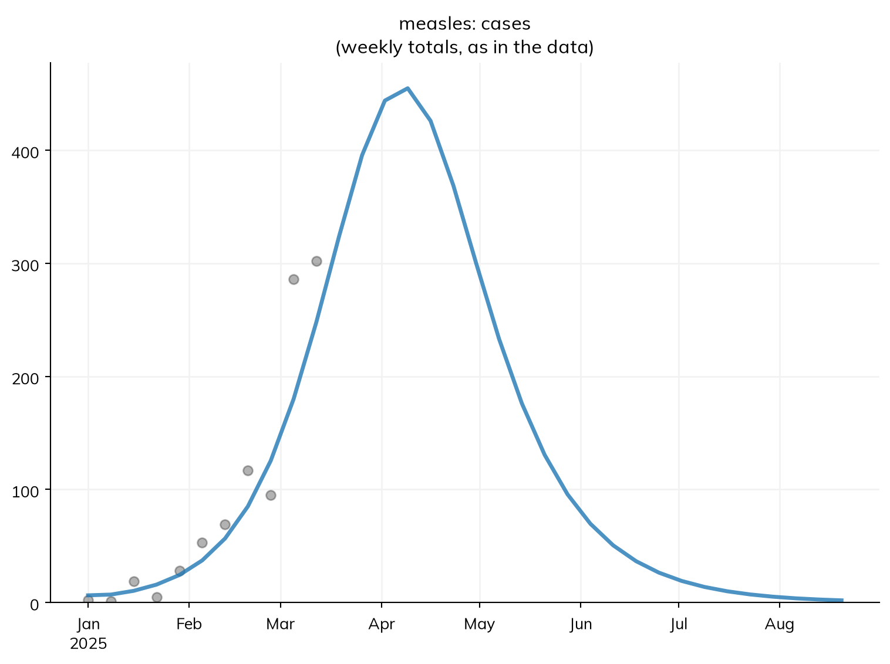
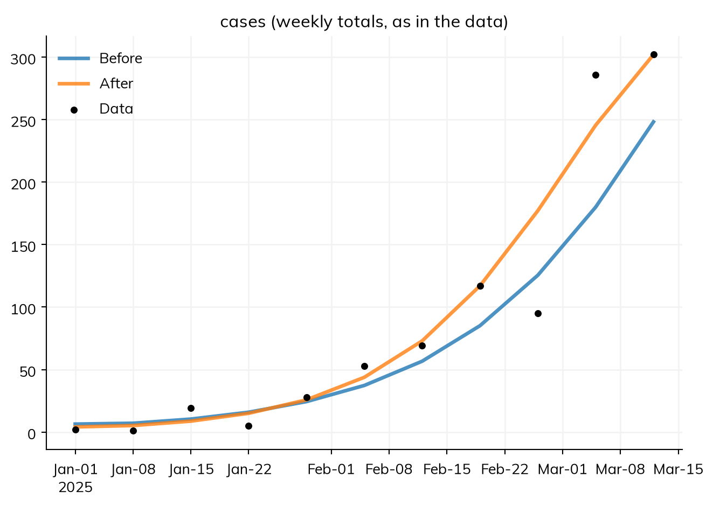
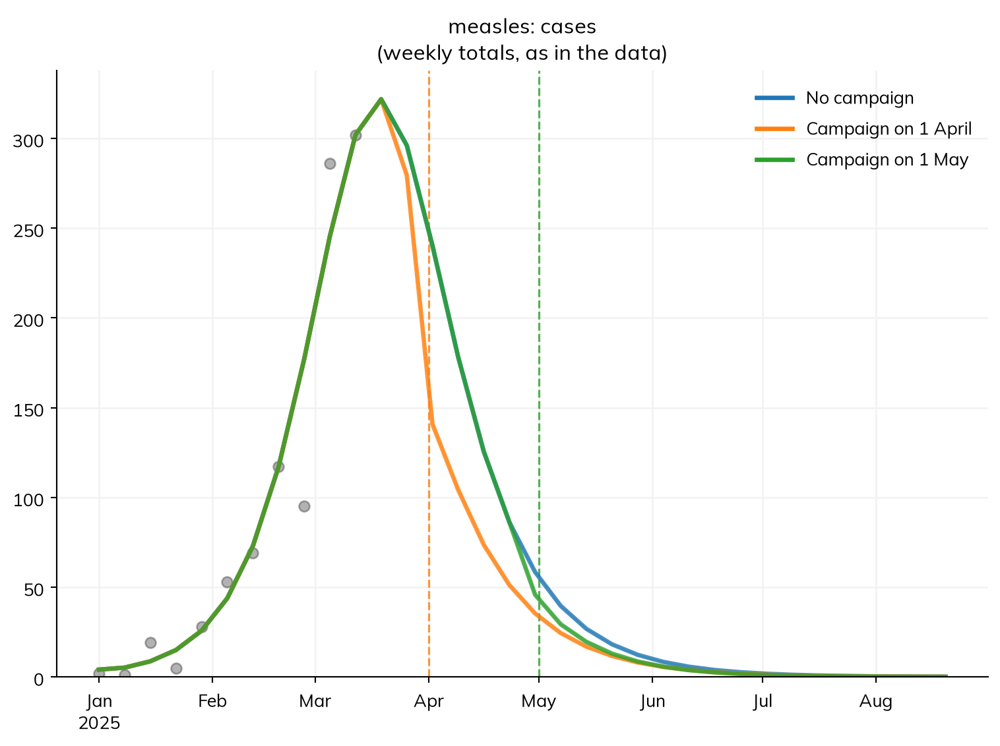
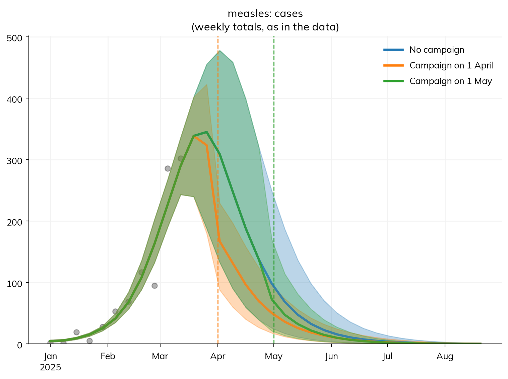
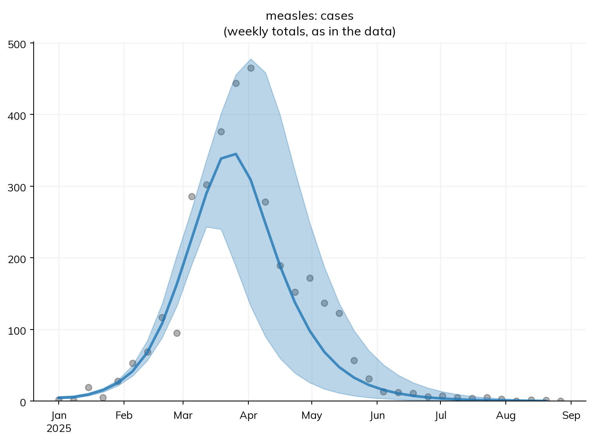
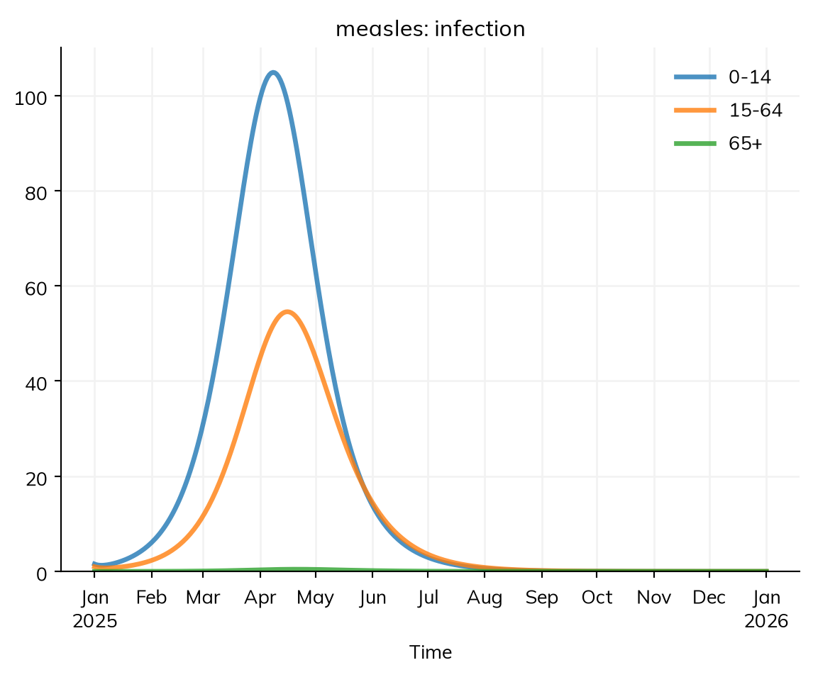
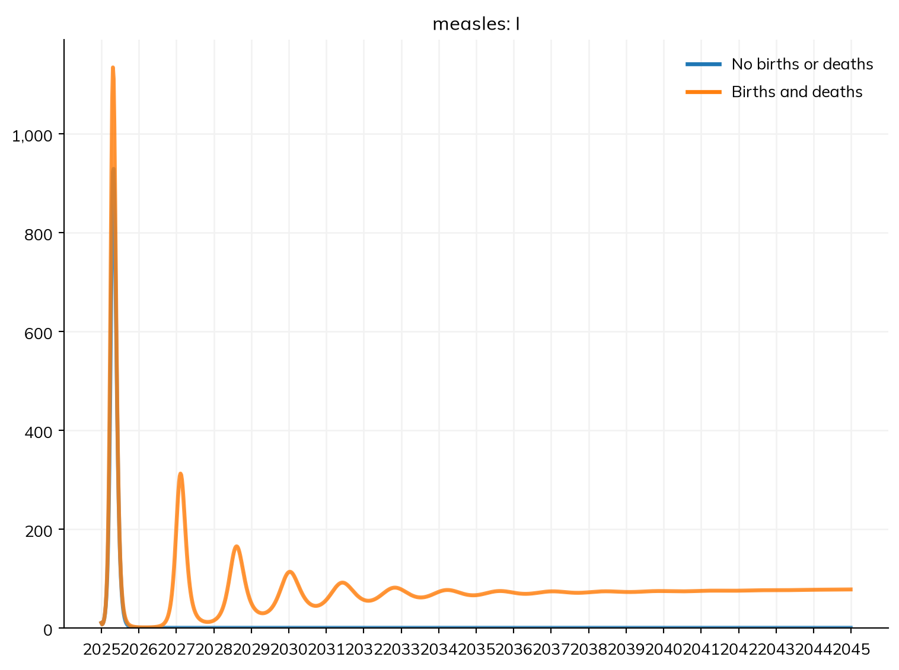

import pandas as pd
import starsim as ss
S, E, I, R = ss.states('S E I R')
beta = ss.par(0.14, bounds=[0.05, 0.5]) # The rate of infection per contact with an infectious person, per day
reported = ss.par(0.5, bounds=[0.05, 1], prior=ss.beta_dist(mean=0.35, std=0.1)) # The fraction of infections that are reported: about a third, from earlier outbreaks
infection = S >> E @ beta*I # Infection, at a rate of β times the contacts with infectious people
progression = E >> I @ ss.days(10) # Latent for 10 days on average
recovery = I >> R @ ss.days(8) # Infectious for 8 days on average
cases = ss.outcome(reported*infection) # Reported cases: a fraction of new infections
measles = ss.Disease(infection, progression, recovery, cases,
init = dict(R=ss.by(age=[0.8, 0.92, 0.98])), # The fraction immune in each age group
init_n = dict(I=10), # 10 people infectious at the start
)
measles.stratify(age={0: 0.3, 15: 0.6, 65: 0.1}) # Ages 0-14, 15-64, and 65+
contacts = ss.contacts(ages=[0, 15, 65], matrix=[[10, 6, 1], [3, 8, 1], [3, 6, 3]]) # Contacts a day, between age groups
settings = dict(networks=contacts, total_pop=100_000, start='2025-01-01', stop='2025-09-01')T6 – Data and calibration
How big will this outbreak get, and would a vaccination campaign now make a difference?
A model of a real outbreak is checked against what was observed. This tutorial fits the measles model to the cases reported in an outbreak, checks the fit, and projects what happens next, with and without a campaign. Advanced sections then find how sure the fit is, and project from that range. A last section gives the model a real population, with births and deaths. By the end, you will be able to:
- say what data measure, as an outcome of the model, and attach data to the model’s results by name;
- fit the model’s parameters to the data, check the fit, and project scenarios from it;
- (advanced) find the range of values consistent with the data, and project from it;
- use a country’s population and contact matrix, and add births and deaths.
The model and what the data measure
This is the measles model from T5 – Interventions and scenarios: a town of 100,000 people in three age groups, mixing by a contact matrix, most of them already immune. It is late March. Measles cases have been reported weekly since January, and are still rising. The health office asks how many cases a vaccination campaign for children would prevent, and how much it matters how soon it starts. Some parameters, like the rate of infection per contact or the fraction of cases reported, can’t be measured directly; calibration fits them to data, and the calibrated model then projects what happens next. Here is the model, with two additions explained below:
library(starsim)
states("S E I R")
beta <- par(0.14, bounds = c(0.05, 0.5)) # The rate of infection per contact with an infectious person, per day
reported <- par(0.5, bounds = c(0.05, 1), prior = ss$beta_dist(mean = 0.35, std = 0.1)) # The fraction of infections that are reported
infection <- Transition(S, E, rate = beta * I)
measles <- Disease(
infection = infection,
progression = Transition(E, I, dur = days(10)), # Latent for 10 days on average
recovery = Transition(I, R, dur = days(8)), # Infectious for 8 days on average
cases = outcome(reported * infection), # Reported cases: a fraction of new infections
init = list(R = ss$by(age = c(0.8, 0.92, 0.98))), # The fraction immune in each age group
init_n = list(I = 10)
)
measles$stratify(age = list("0" = 0.3, "15" = 0.6, "65" = 0.1)) # Ages 0-14, 15-64, and 65+
age_contacts <- contacts(ages = c(0, 15, 65), matrix = rbind(c(10, 6, 1), c(3, 8, 1), c(3, 6, 3)))
make_sim <- function(...) { # A sim with these settings, and any others given
Sim(measles, networks = age_contacts, total_pop = 100000, start = "2025-01-01", stop = "2025-09-01", ...)
}S, E, I, R = ss.State(name='S'), ss.State(name='E'), ss.State(name='I'), ss.State(name='R')
beta_explicit = ss.par(ss.perday(0.14), bounds=[ss.perday(0.05), ss.perday(0.5)], name='beta') # Per contact with an infectious person
reported_explicit = ss.par(0.5, bounds=[0.05, 1], prior=ss.beta_dist(mean=0.35, std=0.1), name='reported')
infection_explicit = ss.Transition(source=S, dest=E, rate=beta_explicit*I, name='infection')
measles_explicit = ss.Disease(
transitions = [
infection_explicit,
ss.Transition(source=E, dest=I, dur=ss.expon(mean=ss.days(10)), name='progression'),
ss.Transition(source=I, dest=R, dur=ss.expon(mean=ss.days(8)), name='recovery'),
ss.outcome(source=reported_explicit*infection_explicit, name='cases'), # Moves nobody: a result worked out from the infections
],
init = dict(R=ss.by(age=[0.8, 0.92, 0.98])), # The rest start in S
init_n = dict(I=10),
name = 'measles',
)
measles_explicit.stratify(age=ss.levels({0: 0.3, 15: 0.6, 65: 0.1}, kind='age')) # Age groups, which people would age through
contacts_explicit = ss.contacts(matrix=[[10, 6, 1], [3, 8, 1], [3, 6, 3]], ages=[0, 15, 65], name='contacts')
settings_explicit = dict(networks=contacts_explicit, total_pop=100_000, start='2025-01-01', stop='2025-09-01', dt=ss.days(1), unit='day', solver='ode', aging=False)First, data rarely measure a model’s states directly: a health office counts only reported cases. An outcome is a result computed from the model’s states and transitions, to compare with what was observed (see Outcomes). Here, cases is reported times the new infections each day.
Second, neither β nor the fraction reported is known, so each is a parameter with bounds (ss.par(..., bounds=...)): the values a fit may try, starting from the values given.
The data
The file data/measles_cases.csv has the measles cases reported each week, from the week starting 1 January to the week starting 12 March:
data = pd.read_csv('data/measles_cases.csv')
data| date | cases | |
|---|---|---|
| 0 | 2025-01-01 | 2 |
| 1 | 2025-01-08 | 1 |
| 2 | 2025-01-15 | 19 |
| 3 | 2025-01-22 | 5 |
| 4 | 2025-01-29 | 28 |
| 5 | 2025-02-05 | 53 |
| 6 | 2025-02-12 | 69 |
| 7 | 2025-02-19 | 117 |
| 8 | 2025-02-26 | 95 |
| 9 | 2025-03-05 | 286 |
| 10 | 2025-03-12 | 302 |
data <- read.csv("data/measles_cases.csv")
dataThe counts jump around, as real counts do, by chance and because reporting varies.
NoteWhere this data comes from
This data is illustrative. It was made from an agent-based run of this model (so not the smooth curve of the ODE), with β = 0.16 and 40% of infections reported (the “true” values, which a fit to real data never knows), and its weekly totals were drawn with more variation than Poisson counts, as reported counts usually have. So, as with real data, no parameter values fit it exactly:
truth = ss.Sim(measles, pars=dict(beta=0.16, reported=0.4), n_agents=100_000, rand_seed=3, **settings).run()
weekly = truth.to_synthetic_data('cases', resample='week', noise=ss.nbinom(n=30)) # Weekly reported cases, each dated by the first day of its week, with extra variation (negative binomial counts)
weekly[weekly.date <= ss.date('2025-03-12')].to_csv('data/measles_cases.csv', index=False)
weekly[weekly.date > ss.date('2025-03-12')].to_csv('data/measles_cases_after.csv', index=False) # What happens nextData is matched to results by name: the column cases is compared with the outcome cases, and each row with the model’s total over the week starting on its date. To attach the data, give it to the sim; plotting the cases then shows the data with the model, here with the starting guesses, which rise too slowly:
sim = ss.Sim(measles, data=data, **settings)
sim.run()
sim.plot('measles.cases')Sim: measles, 100,000 people, as an ODE, 2025-01-01 to 2025-09-01
measles: R0 = 15.8 (R = 2.46 at the start, with 11% susceptible), with 10 infectious at the start
Done in 0.0037 s; measles: 8,788 infections; at most 934 infectious, on 2025-04-27
sim <- make_sim(data = data)
sim$run()
sim$plot("measles.cases")Fitting and checking the fit
sim.fit() fits every parameter with bounds (β and reported) to every result with data (cases), keeping the values with the smallest mismatch: by default, the average difference between model and data, relative to the data’s size. It reports how it searched, and whether searches from different starting points agreed:
fit = sim.fit()Searching on a log scale: beta, reported
Fitting by nelder-mead (2 fitted parameters, for which it is faster than gradients; override with method=)
Converged: the best two of 3 searches, from points of the scan that are apart, ended within 0.00017 of each other (objective values 0.1684 at beta=0.1689, reported=0.2562; 0.1684 at beta=0.1689, reported=0.2562; 0.185 at beta=0.1446, reported=0.5089; 275 evaluations)
The loss is 0.1684 at the best values and 0.2905 at the initial valuesfit <- sim$fit()The searches agree on the best values, but one ended at β ≈ 0.145 with about half of infections reported, fitting nearly as well: these data can’t tell some combinations of the two apart (more on this below).
The fit holds the values found (fit.pars), the sim with the starting guesses (fit.before), and a sim run with the fitted values (fit.sim). A fit always finds some values, so check that they make sense. First, the values, and how much better they fit than the starting guesses:
fit.summarize()Fitted 2 parameter(s) by nelder-mead, with 296 evaluations
Loss: 0.2905 before, 0.1684 after
Converged: the best two of 3 searches, from points of the scan that are apart, ended within 0.00017 of each other (objective values 0.1684 at beta=0.1689, reported=0.2562; 0.1684 at beta=0.1689, reported=0.2562; 0.185 at beta=0.1446, reported=0.5089; 275 evaluations)| par | initial | best | low | high | |
|---|---|---|---|---|---|
| 0 | beta | 0.14 | 0.168880 | 0.05 | 0.5 |
| 1 | reported | 0.50 | 0.256195 | 0.05 | 1.0 |
fit$summarize()With β ≈ 0.17 rather than 0.14, R0 is about 19, a little above the usual range for measles, and about a quarter of infections are reported, which is plausible. These are the values that fit these data best, not the values the data were made with (β = 0.16 and 40% reported): many combinations fit nearly as well. A value at the edge of its bounds, or an R0 of 50, would mean the model or the bounds need another look.
Second, the model against the data, before and after fitting:
fit.plot()
fit$plot()Look for systematic departures, such as residuals on one side for weeks at a time; here the data scatter on both sides, like chance.
Projecting a campaign
The model runs to September, so the fitted model projects the rest of the outbreak. fit.project() runs each scenario with the fitted values. The scenarios are a campaign vaccinating 80% of children under 15 on 1 April, two weeks from now, or on 1 May, if it takes six weeks to organize:
def campaign(date):
""" A campaign vaccinating 80% of children under 15 on a date """
return ss.vaccinate(efficacy=0.93, who=measles.age < 15, when=date, coverage=0.8)
scenarios = {
'No campaign': None,
'Campaign on 1 April': campaign('2025-04-01'),
'Campaign on 1 May': campaign('2025-05-01'),
}
proj = fit.project(scenarios)
proj.plot('measles.cases')
proj.summarize().loc['measles_cases']
| value | |
|---|---|
| scenario | |
| No campaign | 2,447 |
| Campaign on 1 April | 2,103 |
| Campaign on 1 May | 2,399 |
campaign <- function(date) { # A campaign vaccinating 80% of children under 15 on a date
vaccinate(efficacy = 0.93, who = measles$age < 15, when = date, coverage = 0.8)
}
scenarios <- list(
"No campaign" = NULL,
"Campaign on 1 April" = campaign("2025-04-01"),
"Campaign on 1 May" = campaign("2025-05-01")
)
proj <- fit$project(scenarios)
proj$plot("measles.cases")
proj$summarize()$loc["measles_cases"]From the best fit, a campaign on 1 April prevents about 340 of 2,450 reported cases, and one on 1 May, after the peak, fewer than 50. This is one answer, from the best values; the next section asks how sure it is.
Advanced: how sure is the fit?
The data cover only the rise of the outbreak, and while it grows, a smaller outbreak with more reported looks like a larger one with less reported. When data can’t tell two parameters apart like this, they are not identifiable from it (see Fit diagnostics).
The range of values consistent with the data is a posterior. Finding it takes two more things. A likelihood says how the data vary around the model: here, as counts that vary more than Poisson counts (ss.nbinom(n=20), a negative binomial). A prior says what is known before seeing the data: the fraction reported has one (prior= above), about a third, from earlier outbreaks; β’s is uniform over its bounds. A sampler then draws values in proportion to how probable they are, given both. Here it is 'pmcmc', a Markov chain Monte Carlo sampler (for an ODE, a random walk that needs one run of the model per draw); Fitting methods compares it with the others, such as 'nuts':
post = sim.fit(method='pmcmc', likelihood=dict(cases=ss.nbinom(n=20))) # 4 chains, each sampled until they agree
post.summarize()Using the likelihood: the sum of the log-likelihoods of cases, treated as independent
Searching on a log scale: beta, reported
MCMC (random-walk Metropolis): 4 chains in parallel, each of 1000 warm-up draws and then 1250 draws (enough: see draws=), in 24.2 s; exact likelihood; proposals accepted: 24%, 29%, 24%, 27%
Converged: R-hat at most 1.004 and effective sample size at least 519, with 24%, 29%, 24%, 27% of proposals accepted
The negative log-likelihood is 47.82 at the best values and 51.57 at the initial values
Fitted 2 parameter(s) by pmcmc
Negative log-likelihood: 51.57 before, 47.82 after
Converged: R-hat at most 1.004 and effective sample size at least 519, with 24%, 29%, 24%, 27% of proposals accepted
Posterior: 5,000 draws from 4 chains (best: the draw with the highest posterior density; median, lower, and upper: the median and 95% interval of the posterior)
Proposals accepted by each chain: 24%, 29%, 24%, 27%| par | initial | best | low | high | median | lower | upper | rhat | ess | |
|---|---|---|---|---|---|---|---|---|---|---|
| 0 | beta | 0.14 | 0.162318 | 0.05 | 0.5 | 0.161649 | 0.146761 | 0.184281 | 1.003757 | 519.171431 |
| 1 | reported | 0.50 | 0.292269 | 0.05 | 1.0 | 0.296994 | 0.178396 | 0.452359 | 1.003694 | 558.060281 |
post <- sim$fit(method = "pmcmc", likelihood = list(cases = ss$nbinom(n = 20))) # 4 chains, each sampled until they agree
post$summarize()The table gives each parameter’s posterior median and 95% interval, and rhat, which checks that the sampler’s chains agree: it should be at most 1.01. The sampler keeps drawing until it is, and until each parameter has at least 400 effective draws (ess), which takes more draws here than usual, since β and the fraction reported are strongly correlated, which slows a random walk. The interval for the fraction reported, about 18% to 45%, is wide: the data say little more about it than the prior did.
Projecting from the posterior
post.project() runs each scenario once for each of a number of draws from the posterior, so the spread of the runs carries the uncertainty in the values:
proj = post.project(scenarios, n_runs=100)
proj.plot('measles.cases')
proj.summarize().loc['measles_cases']
| median | low | high | mean | std | |
|---|---|---|---|---|---|
| scenario | |||||
| No campaign | 2,812 | 1,812 | 4,378 | 2,919 | 650 |
| Campaign on 1 April | 2,286 | 1,634 | 2,883 | 2,269 | 316 |
| Campaign on 1 May | 2,730 | 1,789 | 4,011 | 2,796 | 565 |
proj <- post$project(scenarios, n_runs = 100)
proj$plot("measles.cases")
proj$summarize()$loc["measles_cases"]The projection is uncertain about the outbreak’s size, but not about the decision: a campaign on 1 April prevents several times as many cases as one on 1 May, after the peak.
What happened next
Since this data is illustrative, we can see what came next, with no campaign (project() passes other arguments, here data=, on to its sims):
after = pd.read_csv('data/measles_cases_after.csv')
everything = pd.concat([data, after])
proj = post.project({'No campaign': None}, n_runs=100, data=everything)
proj.plot('measles.cases')/home/cliffk/idm/ssv4/starsim/results.py:1969: RuntimeWarning:
the last row of the data on cases (2025-08-27) starts a period that ends after the run, so it is not compared with the results. Starsim labels each row of data on a flow by the start of the period it covers; if these data are labeled by its end (e.g. weeks ending on a date), subtract one period from their times; if not, run the sim to the end of that period.

after <- read.csv("data/measles_cases_after.csv")
everything <- rbind(data, after)
proj <- post$project(list("No campaign" = NULL), n_runs = 100, data = everything)
proj$plot("measles.cases")The outbreak was within the projection’s range, near its top: about 40% of infections were in fact reported, which the March data couldn’t tell from a smaller fraction. Early data say how fast an outbreak grows, but not how big it will get, so a decision should rest on the projection’s range, not its median. Fitting a model covers fitting stochastic and agent-based models, other measures of mismatch, and the choice of method; Fit diagnostics covers what else to check.
A real population
The town above is made up. For a real place, the age groups and contacts can come from data. ss.population('Kenya') is Kenya’s population by age and sex (UN World Population Prospects), and ss.contacts('Kenya') a contact matrix by 5-year age group (Prem et al., 2021). stratify() then needs only the age groups, taking their fractions from the population, and Starsim adds up the matrix into them. total_pop keeps the model to a town of 100,000:
measles = ss.Disease(infection, progression, recovery, # The model above, without reported cases
init = dict(R=ss.by(age=[0.8, 0.92, 0.98])),
init_n = dict(I=10),
name = 'measles',
)
measles.stratify(age=[0, 15, 65]) # The fraction in each group comes from the population
kenya = ss.Sim(measles, people=ss.population('Kenya'), networks=ss.contacts('Kenya'), total_pop=100_000, start='2025-01-01', stop='2026-01-01')
kenya.run()
kenya.results.measles.infection.by('age').plot()Sim: measles, 100,000 people, as an ODE, 2025-01-01 to 2026-01-01
measles: R0 = 17.4 (R = 2.44 at the start, with 12% susceptible), with 10 infectious at the start
Note: contact matrix "contacts" aggregated from 16 age groups to the model's 3 (0-14, 15-64, 65+)
Note: people do not age between the age groups, since nobody is born or dies; pass aging=True to age them
Done in 0.0041 s; measles: 10,401 infections; at most 1,125 infectious, on 2025-04-27
measles <- Disease(infection, progression, recovery, # The model above, without reported cases
init = list(R = ss$by(age = c(0.8, 0.92, 0.98))),
init_n = list(I = 10),
name = "measles"
)
measles$stratify(age = c(0, 15, 65)) # The fraction in each group comes from the population
kenya <- Sim(measles, people = ss$population("Kenya"), networks = contacts("Kenya"), total_pop = 100000, start = "2025-01-01", stop = "2026-01-01")
kenya$run()
kenya$results$measles$infection$by("age")$plot()Kenya’s population is young, about 37% under 15, and has more contacts than the made-up matrix, so the outbreak is larger, nearly two thirds of it in children. These data are inputs, not a calibrated model: check the year, age groups, and how the survey defined contacts before relying on them. Places and data explains the data, lists every place there is data for, and shows how to use a country’s regions as places.
Births and deaths
Over decades, children are born susceptible, which is what makes measles come back. Births and deaths go to the sim as demographics: ss.birth() takes a crude birth rate, here 30 a year per 1,000 people, and ss.death() a death rate, here 20 a year per 1,000 at every age. People are born into each disease’s first state (S), die from every state at the same rate, and move up the age groups as they age. Here is the made-up town over 20 years, with and without them:
measles = ss.Disease(infection, progression, recovery, init=dict(R=ss.by(age=[0.8, 0.92, 0.98])), init_n=dict(I=10), name='measles')
measles.stratify(age={0: 0.3, 15: 0.6, 65: 0.1}) # The made-up town's age groups
demographics = [
ss.birth(rate=ss.peryear(0.03)), # 30 births a year per 1,000 people
ss.death(rate=ss.peryear(0.02)), # 20 deaths a year per 1,000 people
]
long = dict(networks=contacts, total_pop=100_000, unit='day', dt=ss.weeks(1), start='2025-01-01', stop='2045-01-01')
msim = ss.parallel({
'No births or deaths': ss.Sim(measles, **long),
'Births and deaths': ss.Sim(measles, demographics=demographics, **long),
})
msim.plot('measles.I')MultiSim: 2 runs of 2 scenarios (No births or deaths, Births and deaths)
Done in 0.32 s
measles <- Disease(infection, progression, recovery, init = list(R = ss$by(age = c(0.8, 0.92, 0.98))), init_n = list(I = 10), name = "measles")
measles$stratify(age = list("0" = 0.3, "15" = 0.6, "65" = 0.1)) # The made-up town's age groups
demographics <- list(
ss$birth(rate = peryear(0.03)), # 30 births a year per 1,000 people
ss$death(rate = peryear(0.02)) # 20 deaths a year per 1,000 people
)
make_long <- function(...) {
Sim(measles, networks = age_contacts, total_pop = 100000, unit = "day", dt = weeks(1), start = "2025-01-01", stop = "2045-01-01", ...)
}
msim <- parallel(list(
"No births or deaths" = make_long(),
"Births and deaths" = make_long(demographics = demographics)
))
msim$plot("measles.I")The birth and death rates are per year and β per day, so unit='day' says which unit the bare β is in (see Time). dt=ss.weeks(1) records results weekly; as an ODE, the model is still solved finely in between.
Without births, there is one outbreak, and then measles is gone. With births, smaller outbreaks follow a year or two apart: the classic pattern of measles where too few children are vaccinated. In the troughs, only a handful of people are infectious, and in reality measles would often die out; an ODE can’t show this, but a stochastic run can (Solvers and backends).
Real birth and death rates change from year to year, and death rates differ by age and sex. Starsim includes the UN’s for 187 countries and territories: ss.population('Nigeria') gives the ages, sex ratio, and size of Nigeria’s population in the start year, ss.Births(birth_rate='Nigeria') its births, and ss.Deaths(death_rate='Nigeria') its deaths by year, age, and sex. People and demographics shows how to check such a model against the UN’s estimates.
Exercises
- Start the fit from other guesses, e.g. β = 0.3 and 20% reported (
ss.Sim(measles, pars=dict(beta=0.3, reported=0.2), data=data, **settings)). Does it find the same values? Are they the values the data were made with? - From the fit, how many reported cases would a campaign on 15 April prevent? And one on 1 April reaching only 50% of children?
- (Advanced) Find the posterior without the prior on the fraction reported (remake
reportedwith noprior=, and the disease from it). How do the interval for the fraction reported, and the range of the projection, change? Where did the narrower range come from? - In the model with births and deaths, raise the birth rate to 45 a year per 1,000 people, as in some countries with young populations. How does the time between outbreaks change, and why?
- In Niger, the crude birth rate is 45 and the crude death rate is 9. Assuming these rates stay constant, and starting with its population in 2020 (
ss.population('Niger', n_agents=5000)), how many people will there be in 2040? (You do not need to include any diseases in your model.) Compare this with its UN birth and death rates.
Further reading
- pomp: Simulation-based inference for epidemiological dynamics: a full course on fitting stochastic epidemic models to case data, with a case study of measles
- Stan: Bayesian workflow for disease transmission modeling: fitting an SIR model to an outbreak, with checks of the fit and of its identifiability
- epydemix: Calibration of epidemic models to data: fitting a compartmental model to case data by approximate Bayesian computation
- Prem et al. (2021): Projecting contact matrices in 177 geographical regions: the source of
ss.contacts('Kenya') - UN World Population Prospects: the data behind
ss.population(),ss.Births(), andss.Deaths()